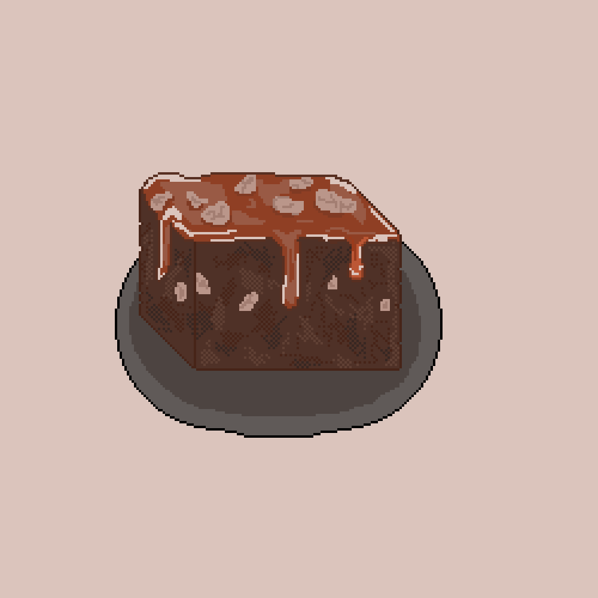

Fudgy Brownies

Description
This recipe makes a mouthwatering batch of gooey brownies
Ingredients
- 12 oz chocolate
- 12 tablespoons butter, melted
- 1 cup sugar
- 3 eggs
- 2 tsp vanilla extract
- 1 cup flour
- 1 teaspoon salt
Steps
- Preheat the oven to 350°F (180°C). Line an 8-inch (20 cm) square baking dish with parchment paper.
- Chop the chocolate into chunks. Melt half of the chocolate in the microwave in 20-second intervals, saving the other half for later.
- In a large bowl, mix the butter and sugar with an electric hand mixer, then beat in the eggs and vanilla for 1-2 minutes, until the mixture becomes fluffy and light in color.
- Whisk in the melted chocolate (make sure it's not too hot or else the eggs will cook), then sift in the flour, cocoa powder, and salt. Fold to incorporate the dry ingredients, being careful not to over mix as this will cause the brownies to be more cake-like in texture.
- Fold in the chocolate chunks, then transfer the batter to the prepared baking dish.
- Bake for 20-25 minutes, depending on how fudgy you like your brownies, then cool completely